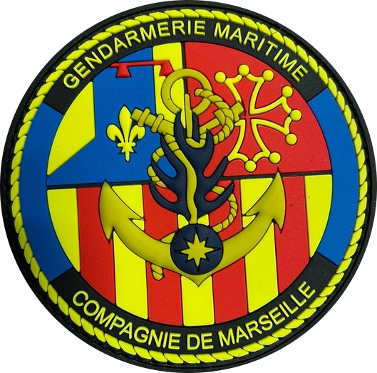
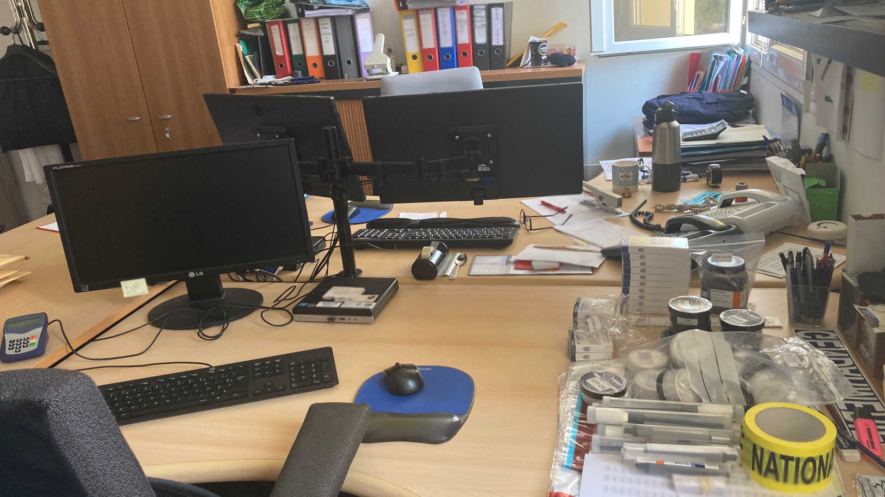

Groupe de commandement de la compagnie maritime de Marseille

Missions :
Le groupe de commandement (GC) a en charge les parties opérationnelle, administrative et ressource humaine des unités placées sous la responsabilité de la compagnie : Assure : - La gestion des plans d'actions, - L'ensemble des tâches administratives, - La chancellerie (félicitations, punitions...), - Les notations, - L'avancement, - Le suivi médical, - Le suivi gestion du matériel des unités, - La préparation des réunions, - Toutes le demandes émanant des unités.
Moyens :
- Mobilité : Véhicules : - 2 Véhicules pour les officiers de la compagnie. - Divers : - Informatique (ordinateurs, logiciels...).
Effectifs :
- 4 personnels : 4 Sous-officiers dont 1 CSTAGN.